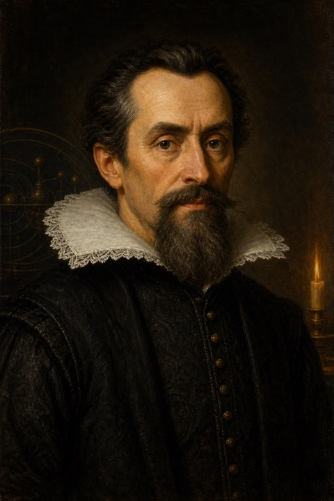

in voce Dr. a. Kepler
In Defense of Astrology
with Newton as witness

Men of the modern age congratulate themselves too quickly.
They imagine that they have escaped superstition because they no longer fear comets, consult almanacs, or tremble before eclipses. They suppose that astronomy slew astrology as reason slays a dragon. The telescope, they say, replaced the horoscope; the observatory superseded the oracle.
Yet the matter is stranger than this.
Astronomy did not abolish astrology. It inherited its heavens.
The astrologers watched the sky long before the physicists emptied it. They named the planets, measured the ecliptic, recorded conjunctions, preserved tables, and taught mankind to see time as order. The first astronomers did not merely clerk dead matter moving through empty space. They were interpreters of a cosmos.
The modern critic asks: Does astrology predict the future?
This is a poor first question.
The older astrologer asked: What kind of time is this?
There lies the secret.
Astrology is not defensible as a crude machine of prediction. It is defensible as the ancient art of qualitative time: a symbolic, astronomical, psychological, and ritual language by which human beings remember that they live within a cosmos, not merely upon a planet.
A horoscope, properly understood, is not a prison. It is an instrument of inquiry.
It asks: What tensions govern this hour? What powers are ascendant? What faculty sleeps? What appetite rules? What danger accompanies success? What harmony has been broken? What must be cultivated before the season passes?
The chart does not eliminate freedom.
It dramatizes it.
In this sense astrology belongs to the great family of divinatory arts: the Delphic oracle, the casting of lots, the yarrow stalks of the I Ching, the figures of geomancy, the shuffled cards of the tarot, the dream, the omen, the sacred book opened at random. Such arts endure not because they always predict events, but because they transmute anxiety into question.
This is no small thing.
A civilization may survive without prophecy. It cannot survive without meaningful questions.
Castalia begins here: not with the claim that the future is fixed, but with the conviction that inquiry itself is sacred. Fortune telling, at its noblest, is not the vulgar sale of certainty. It is a disciplined way of asking. It externalizes intuition into symbol. It gives the soul something to answer.
The charlatan says: “This will happen.”
The oracle asks: “What are you failing to see?”
The difference is everything.
I do not defend the astrologer who flatters vanity, exploits grief, or binds the frightened to fatalism. Such practitioners profane the art. Even in my own age, I rebuked those who debased the heavens to trade tricks and theatrical predictions. The stars were not given to mankind so that fools might sell fear beneath their light.
But abuse does not abolish use.
A map may be misread without geography becoming false.
The gravest error of modernity was not the rejection of astrology’s certainties — many indeed deserved rejection. The greater error was the abandonment of astrology’s questions.
For man still seeks signs.
He reads markets, polls, algorithms, diagnoses, weather models, personality tests, risk scores, recommendation engines, and machine predictions. He laughs at the horoscope, then obeys the algorithm's feed. He mocks the ancient oracle, then asks a new algorithm what he desires.
Modernity did not end divination.
It automated it.
The question, then, is not whether we shall practice divination. We already do. The question is whether our divination shall be conscious, symbolic, humane, and ordered toward wisdom — or unconscious, statistical, commercial, and ordered toward manipulation.
Here astrology has something still to teach.
It reminds us that prediction without reverence becomes control. Interpretation without humility becomes fraud. Data without symbol becomes tyranny. And reason without wonder becomes a very efficient form of blindness.
Newton himself stands as witness to this hidden continuity. We remember him as the priest of gravity, the father of the mechanical cosmos. Yet Newton bent long over alchemy, prophecy, chronology, scripture, and the secret architecture of creation. He did not inhabit the flattened universe later generations attributed to him. His science arose in a world where number, matter, spirit, and divine order had not yet been cleanly severed.
So too with the old astronomers. We calculated because we wondered. We measured because we believed the world intelligible. We sought laws because we suspected harmony.
Astrology, at its highest, is a language of harmony.
Not harmony as ease, nor as sentiment, but as proportion: tension, interval, recurrence, opposition, conjunction. In this it resembles music. A mode does not mechanically force sorrow or courage, yet neither is its effect arbitrary. It disposes the soul. It creates a field of meaning.
So too the heavens.
The moon need not command the heart in order to belong to its symbolism. Saturn need not inject melancholy through invisible rays in order to name limitation, age, discipline, and consequence. Mars need not compel violence in order to signify force, severance, courage, heat, and war.
The symbols are ancient because the experiences are ancient.
Every human life encounters expansion and contraction, desire and restraint, birth and decay, union and exile, radiance and shadow. Astrology arranges these experiences upon the sky and teaches the mind to contemplate them as part of a larger order.
This is not science in the narrow experimental sense.
It is cosmological poetics.
It is ritual psychology.
It is philosophy under the aspect of time.
And perhaps, if we are less arrogant than our century teaches us to be, it is also a remnant of some older wisdom concerning the resonance between world and soul.
For man is not a detached spectator of the universe. He is born from it. His blood answers to light, season, gravity, sleep, tide, temperature, and rhythm. His festivals follow the sun. His crops follow the year. His body keeps clocks older than language.
Why should his imagination alone be exiled from the cosmos?
The rationalist replies: “But the stars do not speak.”
Perhaps not as men speak.
But the sky has always taught by arrangement.
It teaches recurrence. It teaches patience. It teaches that darkness is not disorder, that wandering bodies may obey hidden laws, that what disappears may return, and that the hour is never merely an hour. It teaches that time has form.
This is why astrology survives.
Not because every astrologer is wise. Not because every chart is true. Not because fate is fixed. Astrology survives because human beings cannot cease asking the heavens what kind of world they inhabit, and what kind of moment has arrived.
The proper defense of astrology, then, is not credulity.
It is disciplined wonder.
Let the astrologer be mathematical enough to respect the sky, poetic enough to read symbols, moral enough to refuse exploitation, and humble enough to ask rather than decree. Let the chart become not a sentence, but a question. Let the oracle become not an escape from responsibility, but a summons to it.
For the future is not a stone already carved.
It is a field of tendencies, invitations, dangers, and openings.
To consult the heavens is not to surrender the will. It is to place the will within a larger conversation.
That is why Castalia may honor astrology without becoming foolish. Not because the stars remove the burden of thought, but because they provoke thought. Not because fortune telling ends inquiry, but because, purified, it begins inquiry.
The sky is not an answer key.
It is the oldest question we have.